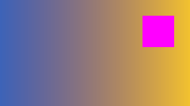
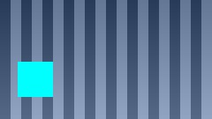

Every kind of thing a document has, each saying what it should look like. The window's title should read "Kosmos - the browser test page".
Maroon rather than grey: its second class comes after a line break in the attribute, and HTML splits classes on any white space.
White on a green ground: this rule is in linked.css, a stylesheet of its own the page links to.
An SVG, drawn at twice its own size: an orange disc and a purple curve, with this paragraph's pale yellow all round them.
The second page · down to the tables · a page that is not there

The test picture at a quarter of its size, scaled once when it came rather than every time it is painted - below the links, since its blue would be taken for one.Six sizes, each smaller than the one before, the first as large as this page's title.
Each word looking like what it says.
A paragraph with bold, strong, italic, emphasis, underlined, struck through, code, Super T, marked, small, H2O and E = mc2.
A line broken here
and carrying on here, on a line of its own.
Letters beyond ASCII: café, mañana, Über, «quotes», “curly quotes”, an em dash — and © 2026.
Bullets, numbers from one, a list inside a list indented further, and terms with their meanings under them.
A caption, a header row shaded grey, borders round every cell, and the last row's second cell spanning two columns.
| Stage | What it does | Where |
|---|---|---|
| fetch | the bytes off the network | the Network Kit |
| parse | HTML and CSS into a document | NetSurf's libraries |
| layout | boxes into places | web_paint.c |
| paint | places into pixels, once, then scrolled by blits | |
A PNG, 240 by 135, blue into gold with a magenta square in its top right; a JPEG of the same size, grey stripes with a cyan square; and a picture that is not there, shown by its words.

Each label beside its field; a box that can be ticked; a choice of three; a button. Nothing here is sent anywhere - the two forms near the top are the ones that send.
A quotation set in from a grey rule, and code on a grey ground keeping its spaces.
A desktop should feel instant on hardware that exists now.
local tls = use("/Kosmos/Kits/tls")
local t = tls.client(conn, "example.com")
t:write("GET / HTTP/1.0\r\n\r\n")
A blue-bordered box on a pale blue ground; one line to the right, one in the middle; one larger, one smaller; one green by its id.
To the right.
In the middle.
Larger than the rest.
Smaller than the rest.
Green, by its id.
Red and bold, by a style of its own.
A line across the page, and then the end.
Enough of the page to scroll: every paragraph below is the same, numbered.
1. A page is laid out once into a surface as tall as itself, and scrolling is one blit out of it.
2. A page is laid out once into a surface as tall as itself, and scrolling is one blit out of it.
3. A page is laid out once into a surface as tall as itself, and scrolling is one blit out of it.
4. A page is laid out once into a surface as tall as itself, and scrolling is one blit out of it.
5. A page is laid out once into a surface as tall as itself, and scrolling is one blit out of it.
6. A page is laid out once into a surface as tall as itself, and scrolling is one blit out of it.
7. A page is laid out once into a surface as tall as itself, and scrolling is one blit out of it.
8. A page is laid out once into a surface as tall as itself, and scrolling is one blit out of it.
The end of the test page. The second page.